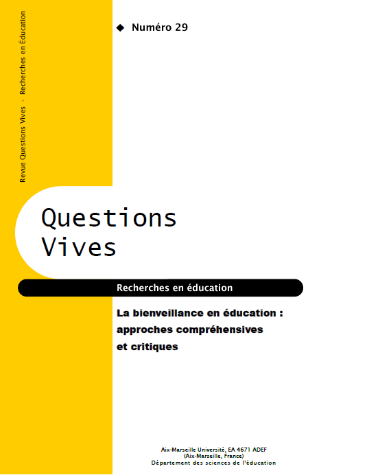

Retrouvez ici une sélection de ressources sur la place de la femme dans le monde informatique.

Sciences, technologies et sociétés de A à Z
« Les femmes comptent pour une part de plus en plus importante du corps professoral québécois et des étudiants universitaires, toutes disciplines confondues (voir Université). Toutefois, de nombreuses différences subsistent encore entre les sexes selon les programmes et niveaux d’études, de financement des activités de recherche, et de production et d’impact scientifique... »
Emprunter

L’informatique a-t-elle un sexe ? : hackers, mythes et réalités
D'où vient cet engouement des garçons pour l'informatique et ce manque d'intérêt de la part des filles ? Pour répondre à cette question, l'auteur retrace une "psycho-histoire de l'informatique", à travers les travaux des pères et mères de l'ordinateur, mais aussi en parcourant des récits de science-fiction. Elle a suivi les traces des programmateurs passionnés qu'on appelle les hackers pour comprendre leur imaginaire. Elle constate que la représentation de l'informaticien s'est incarnée dans ces hackers.
Emprunter

Économie des res derelictae et gestion solidaire des déchets
Cet article analyse le travail « d’évaluation » d’un projet éducatif sur l’égalité filles-garçons en sciences à l’école primaire. Il porte un regard réflexif sur les pratiques évaluatives des dispositifs, en mettant en évidence différents sens socialement situés du mot « évaluer ». Les résultats présentés s’appuient sur une enquête qualitative longitudinale par observations et entretiens auprès des enfants et des adultes participant au projet, et mettent en évidence les effets ambivalents de l’éducation à l’égalité. Une première analyse montre que l’égalité se traduit davantage dans les discours que dans les pratiques, et que les stéréotypes « refoulés » refont régulièrement surface. Cependant, des effets inattendus, notamment liés à l’enquête sociologique elle-même, sont également mis au jour.
Emprunter

Informatique et web : quelle place pour les filles ?
La revue Questions vives, recherches en éducation a pour vocation, depuis 2002, de publier des recherches scientifiques originales portant sur l'éducation et la formation. Chaque numéro est caractérisé par un dossier thématique coordonné par un rédacteur en chef invité, tout en incluant néanmoins diverses rubriques : varia, entretiens, perspectives et notes de lecture. Le titre Questions Vives incite à s'intéresser aux questions vivement débattues dans la communauté scientifique et rappelle qu'il est sans cesse utile de questionner de manière exploratoire les certitudes, les consensus, les problématiques reconnues, les savoirs acquis, comme le sens commun qui les supporte.
Emprunter

Les femmes dans les filières et les métiers « masculins » : des paroles et des actes
« On le dit et le répète : la considérable avancée des filles dans l’enseignement secondaire et supérieur depuis les années 1970 ne s’est pas accompagnée d’un bouleversement majeur dans leurs « voies de prédilection ». Depuis quarante ans, si leur part a fortement progressé dans les disciplines où elles étaient minoritaires (droit, médecine, gestion, etc.), elles ont également continué de renforcer leur présence – et les garçons leur absence – au sein des filières les plus féminisées de l’université (lettres et sciences humaines)... »
Emprunter

Formations techniques et scientifiques : de la promotion des femmes à une politique institutionnelle de l’égalité ?
« Si la parité est aujourd’hui atteinte sur l’ensemble de la formation supérieure, les femmes restent très marginalisées dans un certain nombre de formations techniques et scientifiques, notamment dans les filières du génie mécanique et électrique, de l’informatique et de la physique... »
Emprunter

17 femmes prix Nobel de sciences
« À ce jour, seules 17 femmes ont vu leurs travaux scientifiques couronnés par le prix Nobel. Marie Curie fut la première, en 1903 et 1911, suivie de sa fille Irène Joliot-Curie en 1935, mais les autres restent dans l’ombre. On connaît les biologistes Françoise Barré-Sinoussi, primée en 2008, Barbara McClintock (1983) et Rita Levi-Montalcini (1986), mais qui a entendu parler de Linda Buck, d’Ada Yonath, d’Elizabeth Blackburn ou de You you Tu ? Ce livre vient éclairer les trajectoires, souvent surprenantes, de ces femmes qui sont parvenues à l’excellence dans un milieu qui fut et reste en grande partie masculin. D’où tiennent-elles leur curiosité ? Comment ont-elles concilié recherche et vie de famille ? Comment ont-elles été accueillies par le milieu scientifique ? Cette très vivante série de biographies dresse un tableau de la diversité des origines sociales et des caractères, avec cependant comme points communs une farouche indépendance d’esprit et une persévérance à toute épreuve. Le tableau scientifique n’est pas moins varié, du noyau atomique aux ribosomes et aux gènes sauteurs, même si l’on ne trouve que trois « Nobelles » dans le domaine de la physique. L’occasion de réfléchir à l’importance culturelle et sociale du genre dans la recherche scientifique. La vieille maxime « Les esprits n’ont pas de sexe » ne cesse décidément de se vérifier. »
Emprunter

Des actions pédagogiques pour guider des filles et des femmes en STIM : sciences, technos, ingénierie et maths
Le nombre de femmes diplômées des universités québécoises en sciences pures et appliquées ne progresse plus depuis les années 2000 ; il a même légèrement chuté. Comment guider les filles et les femmes vers les sciences, les technologies, l’ingénierie ou les mathématiques (STIM) ? Comment contrer les stéréotypes de genre qui perdurent ? Cet ouvrage constitue une ressource innovante pour soutenir des pédagogies qui visent l’équité dans l’enseignement et l’apprentissage des STIM. Il offre des pistes d’intervention et de réflexion pour agir positivement sur les représentations des élèves à l’égard des STIM, et ce, à tous les ordres d’enseignement (primaire, secondaire, collégial, universitaire) et même en famille. Des actions pédagogiques et éducatives sont notamment suggérées pour éveiller la passion des élèves, en particulier des filles, pour des études et des carrières scientifiques et technologiques. Des dispositifs de formation et des actions de sensibilisation sont aussi proposés afin de contribuer à l’équité de genre dans l’éducation au sein de la francophonie canadienne et d’ailleurs. Les personnels enseignants et scolaires occupant des postes d’intervention, de formation ou de direction et les parents trouveront dans cet ouvrage des suggestions pratiques pour éveiller l’intérêt des filles et des femmes des milieux francophones pour les STIM.
Emprunter

Trop belles pour le Nobel : les femmes et la science
Trop belles pour le Nobel
Nul n'ignore que la science a longtemps été le domaine exclusif d'Homo mathematicus, que les femmes savantes sont ridicules et que les ingénieures ne sont pas légion. Mais si les sciences dures marchent à la testostérone, c'est aussi que leur histoire a été écrite par des hommes, attentifs à prouver par X + Y que les femmes sont génétiquement incapables de rigueur logique et d'abstraction.
Pour en finir avec cette histoire truquée où les femmes sont soit des curiosités de la nature, soit des muses, soit des potiches, l'auteur a préféré le mode de l'anecdote à celui de la grande synthèse théorique. De la femme de Cro-Magnon à Dian Fossey en passant par Émilie du Châtelet et Ada Lovelace, les héroïnes célèbres côtoient des inconnues non moins illustres, toutes témoignant de l'omniprésence des femmes au coeur de la science.
Ni pamphlet féministe, ni évaluation paternaliste de l'apport scientifique des femmes, cette galerie de portraits montre que la science a simultanément joué un rôle dans leur émancipation et dans leur marginalisation. Une façon pertinente et drôle de remettre à leur place les mythes sexistes qui voilent durablement, au préjudice de tous, la moitié féminine de la science.
Emprunter